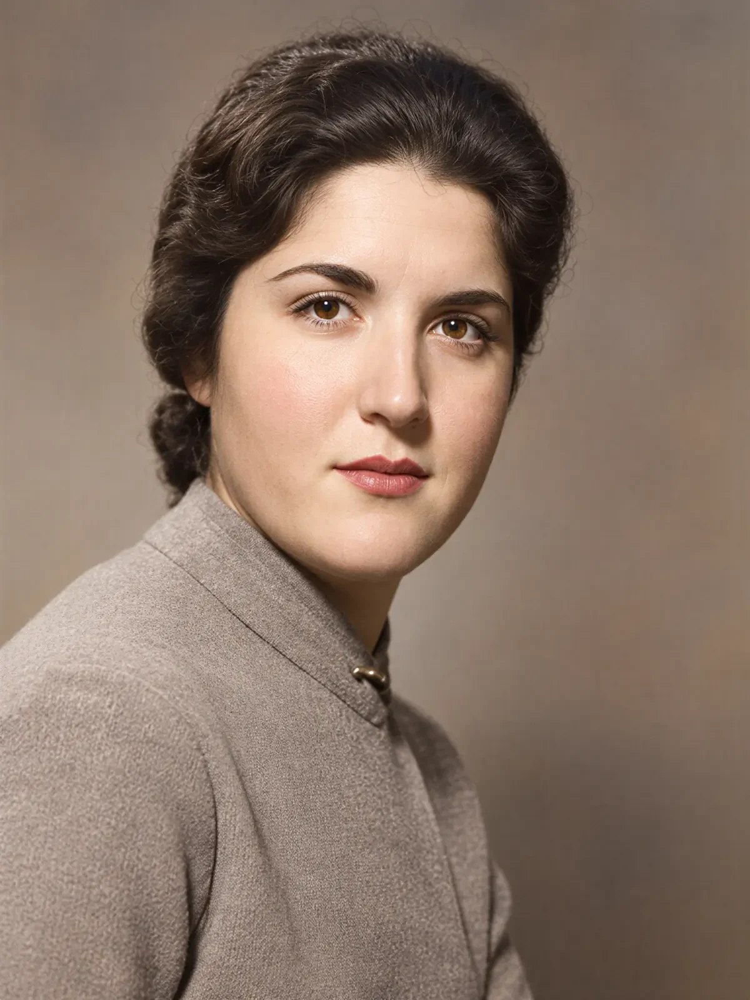
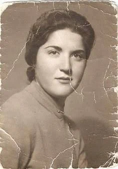
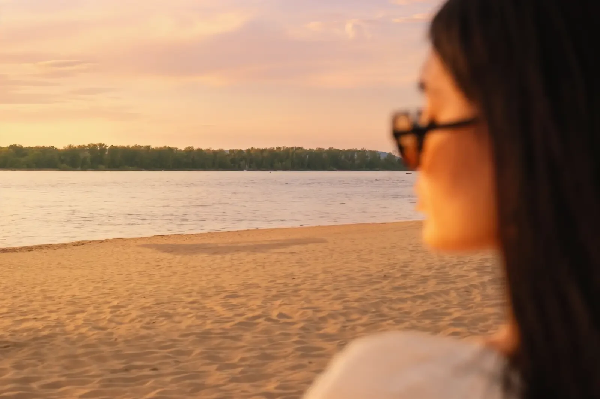
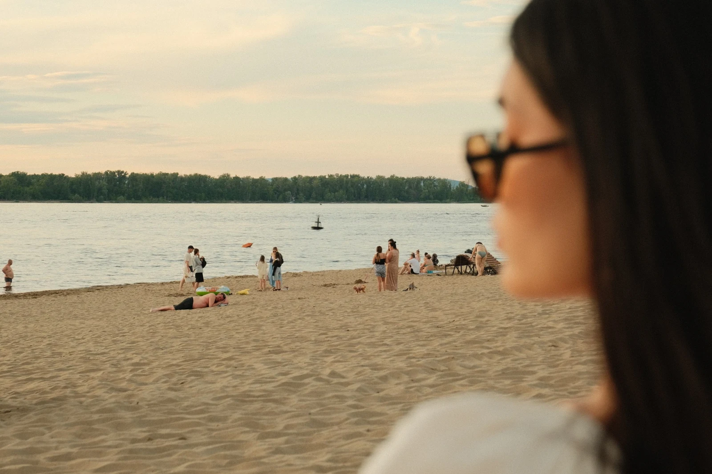
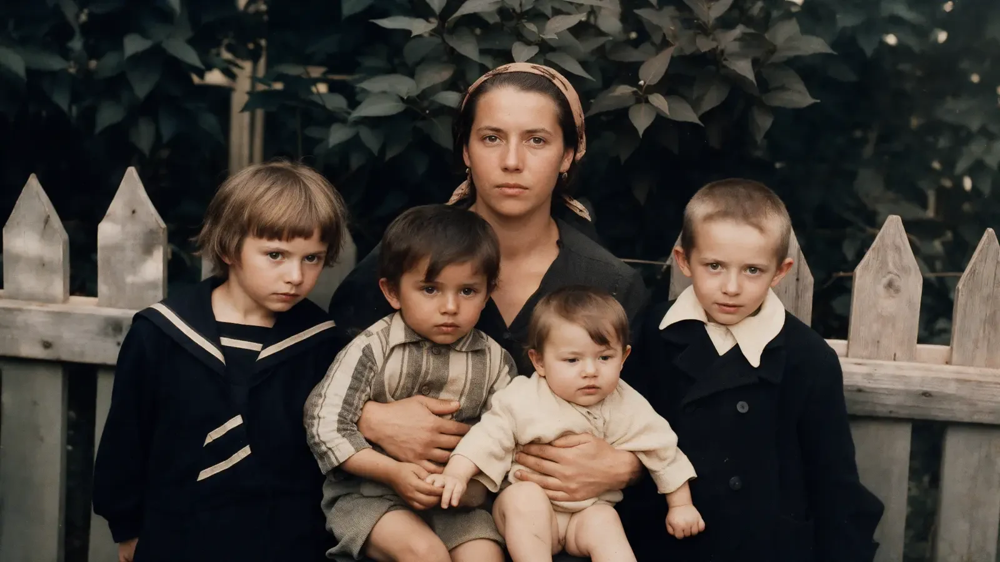
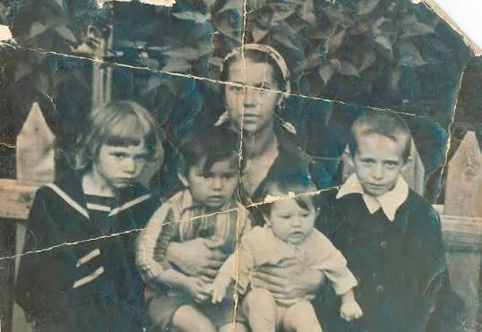
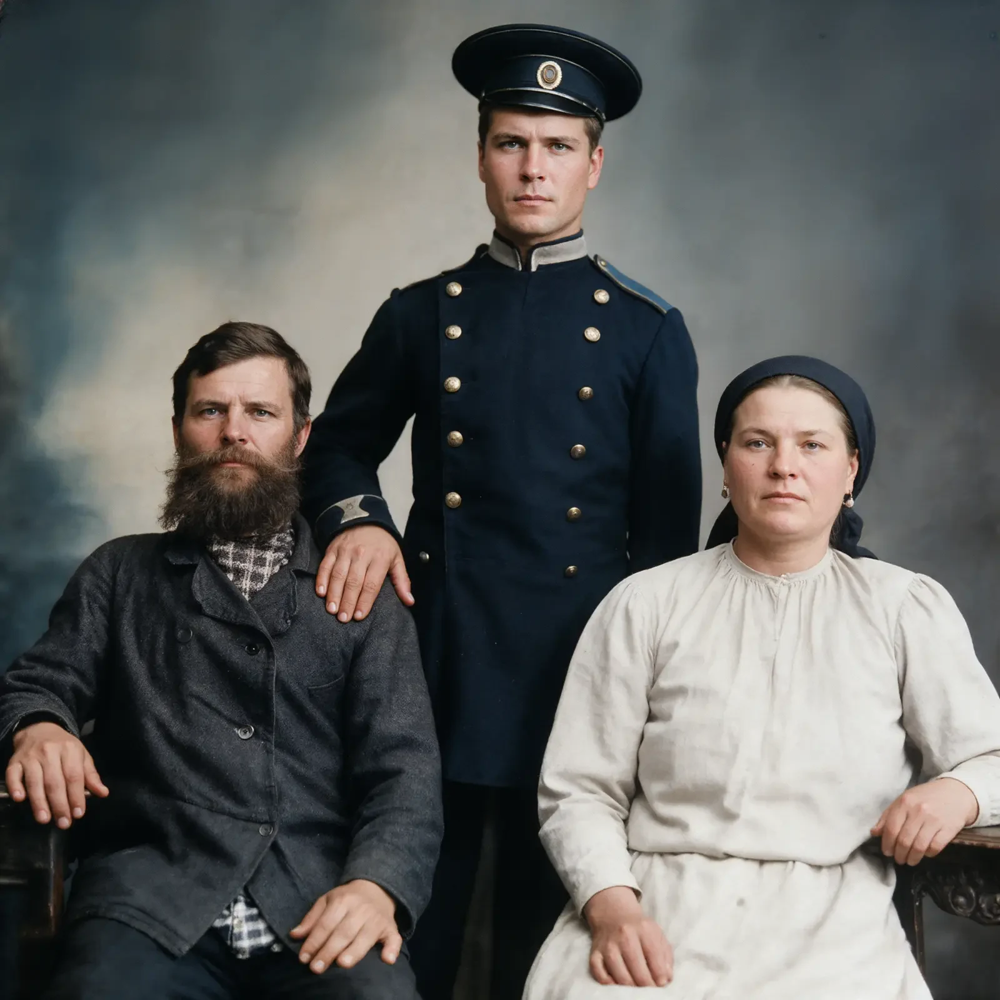
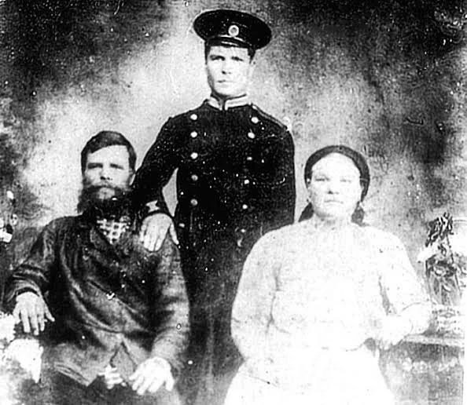
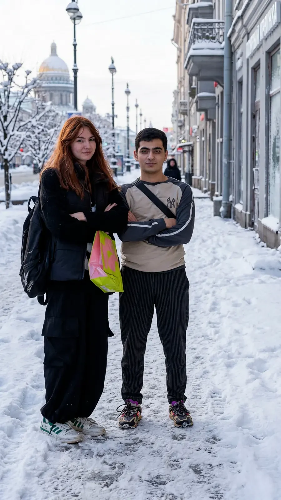
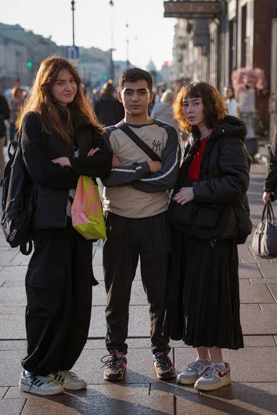

ДоПослеРеставрация портрета
Восстановление повреждений, детализация и деликатная колоризация.
Максим · AI-креатор и визуальный контент
Создаю визуальный контент с помощью ИИ. От идеи до готовой серии.
Идея. Композиция. Характер.
Для брендов, бизнеса и авторских проектов.
01 / Избранное
В центре — задача и характер проекта. Инструменты помогают воплотить идею в изображении и движении.
02 / Маркетплейсы
Главный визуал, детали, преимущества и инфографика. Нажмите на проект, чтобы посмотреть всю серию.
03 / Рекламные постеры
Три категории, три визуальных решения: от эмоциональной истории до строгой предметной сцены.
04 / Коллажная анимация
Бумажные слои, фотографии, типографика и звук складываются в короткие образовательные ролики.
Бим объясняет слова на простых примерах. Рядом — прорывы нейросетей и дайджест ИИ с летающей Tesla.
05 / Видео
Фешн-видео, мультяшный диалог и истории Бима с видеовставками. Нажмите на обложку — ролик откроется со звуком и управлением.
Реставрация, изменение композиции и персональные стилизации. Передвигайте разделитель, чтобы сравнить исходник и результат.


ДоПослеВосстановление повреждений, детализация и деликатная колоризация.


ДоПослеУдаление лишних людей с сохранением света, перспективы и атмосферы.


ДоПослеОчистка старого снимка и естественная цветокоррекция.


ДоПослеВосстановление лиц, одежды и деталей фона.


ДоПослеПеренос героев в новую сцену и изменение окружения.
Luxury Sci‑Fi · футуристичная fashion-фотосессия: хром, неон и металлическое платье.
Структура, визуальная логика и инфографика. Каждый проект открывается целиком, с переключением слайдов.
09 / Другие задачи с ИИ
Если вашей задачи нет среди основных направлений — обсудим её и подберём подходящий способ реализации.
Структура, дизайн и адаптивная страница для услуги, продукта или личного проекта.
Статичные и интерактивные приглашения на свадьбы, дни рождения и другие события.
Истории с вашими персонажами, индивидуальным сюжетом и единой визуальной стилистикой.
Индивидуальные визуальные и контентные решения с использованием возможностей нейросетей.
Стоимость и объём работ согласуем под вашу задачу.
10 / Обо мне
Инженер с высшим образованием. Развиваюсь в сфере искусственного интеллекта и создаю визуальные материалы, контент и цифровые решения.
Соединяю системное мышление с творческим подходом: продумываю идею, подбираю инструменты, собираю результат и дорабатываю детали.
Для меня важен понятный процесс — от задачи и согласования концепции до готовой серии материалов.
Начинаю с цели, содержания и формата. Каждый визуальный приём работает на идею.
Согласуем концепцию и ключевые решения. Учитываю ТЗ и обратную связь.
Сохраняю общий характер проекта в изображениях, типографике и движении.
11 / Инструменты
Сочетаю нейросети для генерации с инструментами монтажа и доработки. Набор подбираю под задачу.
12 / Контакты
Расскажите о задаче, формате и сроках — обсудим, каким может быть результат.